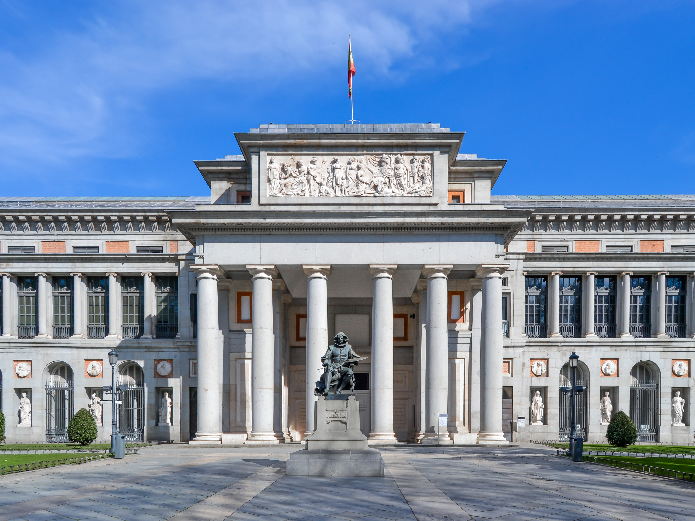
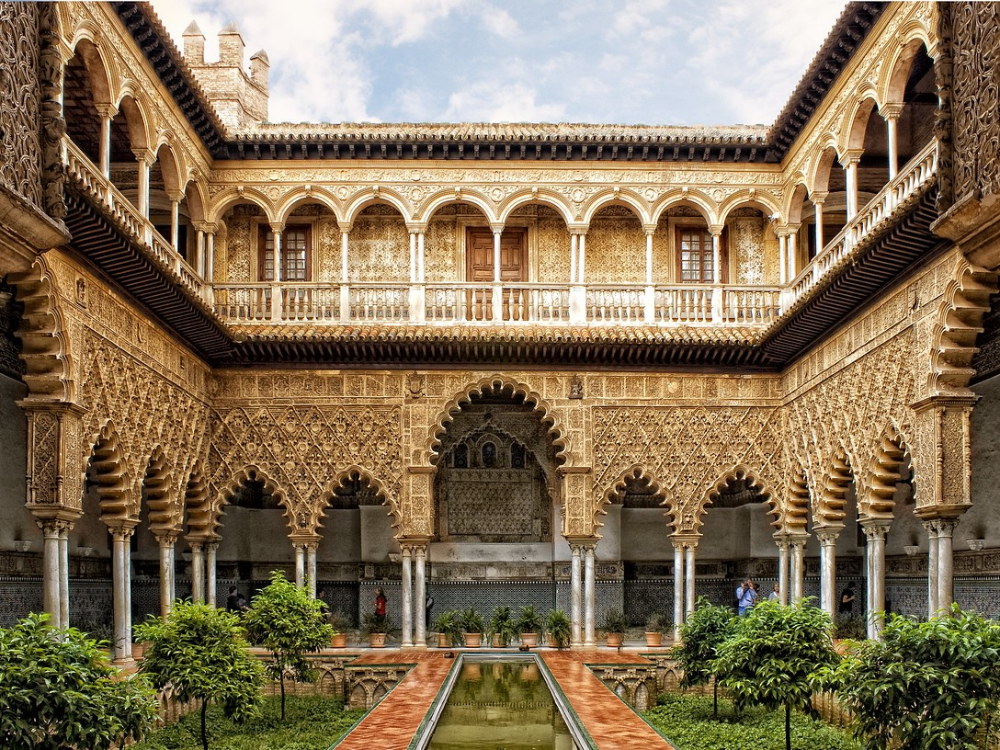
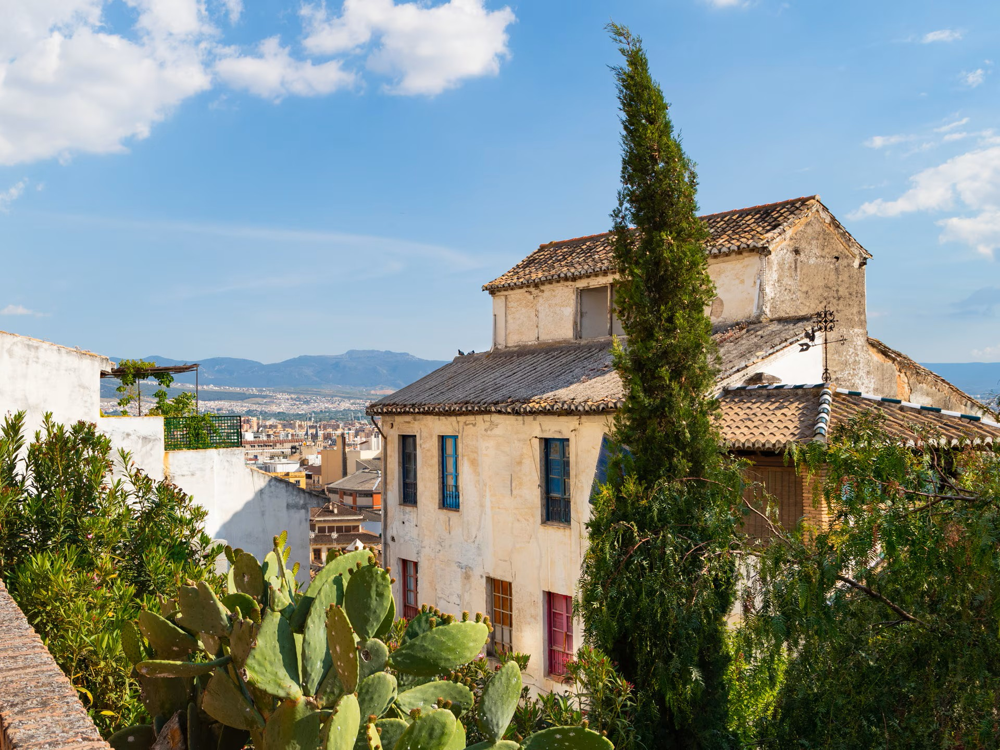

Um sonho em pedra que toca o céu. Gaudí transformou fé e arte em uma das obras mais impressionantes do mundo!

Museu do Prado
Um dos museus de arte mais importantes do mundo, com obras de Goya, Velázquez, El Bosco e muitos outros mestres europeus.
Alhambra
Um palácio mouro lindamente decorado com jardins, fontes e detalhes arquitetônicos impressionantes. Um exemplo marcante da arte islâmica na Europa.
Catedral de Sevilha e La Giralda
A maior catedral gótica do mundo e sua famosa torre, La Giralda, que já foi um minarete muçulmano.
Parque Güell
Também criado por Gaudí, esse parque colorido mistura natureza e arte com esculturas, mosaicos e formas orgânicas. É um dos lugares mais fotogênicos da cidade.
Palácio Real de Madrid
Imponente residência oficial da monarquia espanhola, conhecida por seus salões luxuosos e exposições de arte e armas.
Generalife
Os jardins do antigo palácio de verão dos reis mouros, com fontes, terraços floridos e paisagens relaxantes.

Real Alcázar de Sevilha
Palácio real com influência islâmica e cristã, jardins deslumbrantes e uma arquitetura de tirar o fôlego.
La Rambla
A avenida mais famosa da cidade, cheia de vida, com artistas de rua, lojas, cafés e acesso ao famoso Mercado La Boquería.
Plaza Mayor
Praça histórica cercada por edifícios antigos e cafés, ponto tradicional para passeios, eventos e gastronomia local.

Albaicín
Bairro antigo com ruas estreitas, casas brancas e mirantes com vistas incríveis da Alhambra e das montanhas da Serra Nevada.
Plaza de España
Construída para a Exposição Ibero-Americana de 1929, a praça é monumental, com canais, pontes e cerâmicas representando as províncias da Espanha.
{kind=link}
{kind=link}
{kind=link}
{kind=link}
{kind=link}
{kind=link}
{kind=link}
{kind=link}
{kind=link}
{kind=link}
{kind=link}
{kind=link}